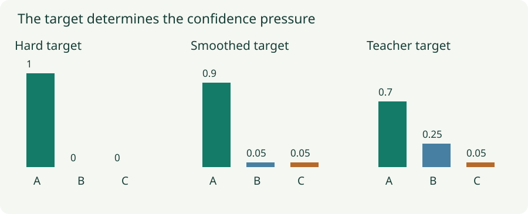

Label Smoothing and Distillation: Change the Target Distribution
Derive the $p_k-q_k$ softmax gradient, show how label smoothing bounds logit growth, and derive the $T^2$ factor in knowledge distillation.
Hard one-hot labels push correct-class logits toward $+\infty$ and wrong-class logits toward $-\infty$. Label smoothing replaces the one-hot target with a uniform mixture to cap logit gaps, while knowledge distillation uses a temperature-softened teacher distribution to transfer inter-class similarity (“dark knowledge”).
1. Derive the softmax cross-entropy gradient $p_k-q_k$
Given logits $z\in\mathbb R^K$, softmax probabilities $p_k=e^{z_k}/\sum_{j=1}^K e^{z_j}$, and any target distribution $q$ with $\sum_{j=1}^K q_j=1$, write cross-entropy as
Differentiating with respect to $z_k$ gives:
With a hard one-hot target $y=(1,0,0)$, the correct-class gradient is $p_1-1<0$ for every finite logit—driving $z_1-z_j\to+\infty$ forever.
2. Label smoothing and the finite optimal logit gap
With smoothing strength $\varepsilon\in(0,1)$ across $K$ classes, label smoothing mixes the one-hot label $y$ with the uniform distribution $u_k=1/K$:
Setting $\partial L/\partial z_k=p_k-q_k=0$ makes $p=q$ the exact minimum, which occurs at a finite logit gap between the correct class $c$ and any wrong class $k\ne c$:
For $K=3$ and $\varepsilon=0.15$, the target is $q=(0.9,0.05,0.05)$ and the optimal logit gap is $\log(0.9/0.05)=\log 18\approx 2.89$. If $p_c$ rises above $0.9$ (say $p=(0.98,0.01,0.01)$), the gradient $p_c-q_c=+0.08>0$ reverses sign and pulls the overconfident logit back down.
Up to constants independent of $p$, label smoothing adds $\varepsilon\operatorname{KL}(u\|p)$ (forward KL from uniform, strongly penalizing $p_k\to 0$), whereas an entropy confidence penalty $-\beta H(p)$ adds $\beta\operatorname{KL}(p\|u)$ (reverse KL).

3. Knowledge distillation and why we multiply by $T^2$
Given teacher logits $v$ and student logits $z$, knowledge distillation softens both distributions with temperature $T\ge 1$—$q_k^{(T)}=\operatorname{softmax}(v/T)_k$ and $p_k^{(T)}=\operatorname{softmax}(z/T)_k$—and minimizes:
Why is the distillation term multiplied by $T^2$? Follow the gradient with respect to student logit $z_k$ in two steps:
- 1. Chain rule through $z_k/T$ gives the first $1/T$: Because $p^{(T)}=\operatorname{softmax}(z/T)$, differentiating the unscaled cross-entropy $\operatorname{CE}(q^{(T)},p^{(T)})$ gives
$$\frac{\partial\operatorname{CE}(q^{(T)},p^{(T)})}{\partial z_k}=\frac{1}{T}\bigl(p_k^{(T)}-q_k^{(T)}\bigr).$$
- 2. High-temperature linearization of softmax gives the second $1/T$: For large $T$, $e^{z_k/T}\approx 1+z_k/T$, so $p_k^{(T)}\approx\frac{1+z_k/T}{K+\sum_j z_j/T}\approx\frac1K\bigl(1+\frac{z_k-\bar z}{T}\bigr)$ where $\bar z=\frac1K\sum_j z_j$. Subtracting $q_k^{(T)}$ yields:
$$\frac{\partial\operatorname{CE}(q^{(T)},p^{(T)})}{\partial z_k}\approx\frac{1}{KT^2}\bigl((z_k-\bar z)-(v_k-\bar v)\bigr).$$
Because the unscaled soft-target gradient shrinks as $1/T^2$, multiplying by $T^2$ keeps the distillation gradient on the same $O(1)$ scale as the hard-label gradient when $T$ is changed.
4. Lab: compare targets, probabilities, and logit gradients
One prediction, three classes
Student logits are $(z_A,0.5,-1)$; teacher logits are $(3,2,-2)$. In smoothing mode the temperature is 1. In teacher mode both distributions use the selected temperature and the displayed gradient includes $T^2$ scaling. The lab shows the soft-target term alone.
5. Questions worth answering
Exactly when the student’s predicted probability $p_c$ exceeds the soft target $q_c=1-\varepsilon+\varepsilon/K$, making $\partial L/\partial z_c=p_c-q_c>0$.
Raising $T$ during training magnifies small teacher probabilities (such as $v_B=2$ vs. $v_C=-2$) so the student learns relative inter-class structure. Once trained, the student’s logits already encode that geometry and are evaluated at standard $T=1$.
Sources
Szegedy et al., Rethinking the Inception Architecture for Computer Vision; Hinton, Vinyals, and Dean, Distilling the Knowledge in a Neural Network; Pereyra et al., Regularizing Neural Networks by Penalizing Confident Output Distributions.